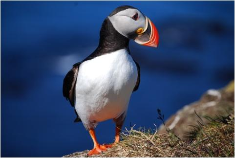
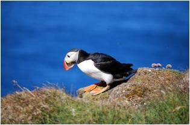
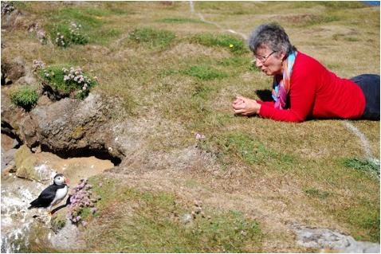
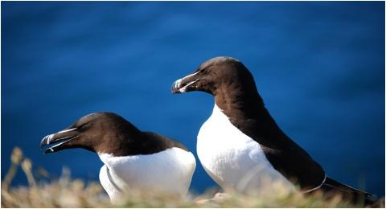
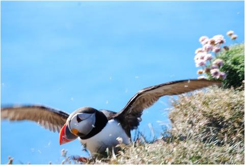

|
En lille og smuk bajads 
Den lune sommerdag, hvor jeg besøgte klippen, var mine ben ikke indstillet på at bestige dens øverste plateau, så jeg satte mig på græsset i ”underetagen” tæt ved den farlige kant til afgrunden, som er gjort porøs, fordi søpapegøjerne bygger deres over 1 meter dybe redehuler i det bløde materiale lige under. Her indledte jeg så en samtale med de små charmetrolde, der gang på gang kom op fra deres huler for at inspicere det underlige væsen i græsset; var det blot endnu en af de hundredvis af turister med barnlig hang til pip pip lyde, eller en menneskelig bajads, man kunne tage alvorlig? De valgte heldigvis den sidste fortolkning og bad mig straks lægge mig fladt på maven, hvis jeg absolut skulle ligge så tæt ved kanten og beglo dem; havde jeg ikke set den hvide advarselsstribe, som var blevet lavet efter uheldet i 2010, hvor en uforsigtig mand styrtede ned og omkom? Jo, det havde jeg da, men hvad med den selv, var det ikke noget af et vovestykke, når den med sin i forhold til kroppens tyngde korte vinger kastede sig ud over afgrunden for at hente føde til afkommet? Jeg kunne se, at den sad og tænkte, om det spørgsmål egentlig ikke var en kende uforskammet, men også at den følte sig smigret over min interesse. Den besluttede at fortælle lidt om sig selv og sin art:  Ja, der er langt ned
”Vi søpapegøjer, eller lunder, som man også kalder os, er bygget til at dykke efter føde, og vi kan komme langt ned, måske op til 70 meter, og vi er både hurtige og elegante under vandet. Der skal nemlig fanges mange fisk, selvom der som regel kun er én unge i reden, for den er altid sulten, og den elsker tobis. Heldigvis kan jeg have flere fisk i munden ad gangen, fordi der inde i mit næb sidder en slags kroge, de kan spiddes på: nå ja, og så skiftes mutter og jeg til at made den lille ædedolk; men nu er det min tur.”  Min veninde Tove har fundet en næbbet ven Jeg lå lidt alene og spejdede op mod det øverste plateau, hvor mine rejsekammerater fotograferede mundingen af den storslåede Breidafjord, så gled mit blik hen over klippesidens ”etager”, som bebos af blandt andre søpapegøjens nære slægtning alken, men også af mallemukker, lomvier og rider.  Alken, en nær slægtning Sikke et leben, hvilken larm! Tilsyneladende gav naboskabet dog ikke anledning til særlig mange konflikter; så vidt jeg kunne se, var det kun ubudne arktiske terner, der opførte sig asocialt, når de forsøgte at stjæle fangsten fra de fiskende søpapegøjer. Min ven fra før blev netop generet af en af disse elegante pirater, hvis angreb den med stor rutine afparerede. Den havde syv tobiser i sit trekantede, farverige, effektive, smukke næb, som tillige er et smart indslag i kurmageriet. Da maden var afleveret, vendte min ”talende” søpapegøje tilbage for en kort bemærkning og forklarede på mit spørgsmål om, hvorfor en større flok af artsfæller fløj frem og tilbage foran klippen, at de var ikke kønsmodne ungfugle og derfor blev holdt uden for kolonien. Det var dem, som menneskene forgreb sig på med deres fuglefangststang, når de var lækkersultne. Med kulsort dårlig samvittighed undgik jeg dens øjne med erindringen om gårsdagens velsmagende lundebryst på min tallerken og bremsede med nød og næppe en plat bemærkning om, at det var en cadeau til den både at se godt ud og smage godt. Det var vist på tide at bryde op. Da jeg på vej ned fra klippen vendte mig for at vinke farvel, sad den og kløede sig, tydeligt generet af et eller andet og kom så i tanker om, at dens eneste virkelige plageånd her på Látrabjarg hverken er ræv eller mink men en blodmide med det latinske navn Docophorus Celedoxus, som har en særlig forkærlighed for havfugle. Dens sug er ikke dødelige, så jeg håber på atter at møde min ven, hvis jeg senere skulle vende tilbage til klippernes klippe om nogle år; en søpapegøje kan nemt blive over tyve år gammel, umuligt er det altså ikke. Rejsekammeraterne og jeg selv sidder i bilen på hjem til vores natkvarter, Hotel Breidavik, kun små tyve kilometer borte, og dagens oplevelser fremkalder både eufori og taknemmelighed. Alle priser naturens storslåethed, og jeg tænker især på en lille kluntet, bredbrystet bajads med orangefarvede ben og et malerisk hoved, lidt tung i flugten, men en elegantier i vandet; jeg giver Johannes V. Jensen ret: Naturen er aldrig banal. 
|
||